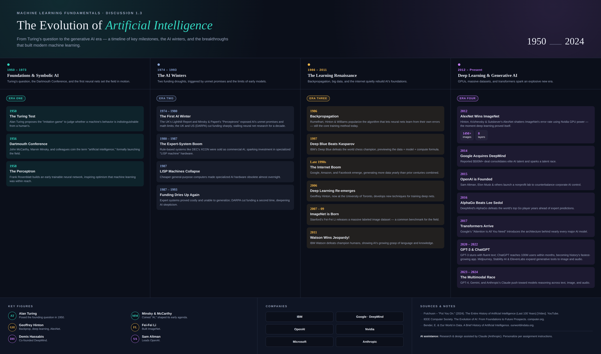
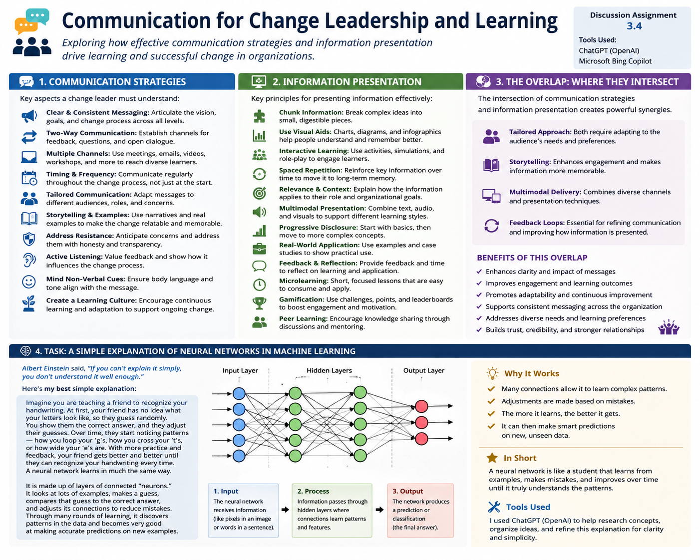

Selected work
Deliverables from Machine Learning Fundamentals (AIML-500), presented with objective, process, tools, and value proposition for each.
The Evolution of Artificial Intelligence — Timeline Infographic
Discussion 1.3
Click to enlargeObjective
Built for Discussion 1.3 in Machine Learning Fundamentals: to research and visually summarize the major milestones in AI history, from Turing's 1950 question through the generative AI boom, in a single reference graphic.
Process
Researched and organized AI milestones into four chronological eras, then designed a custom dark-mode infographic in HTML/CSS — color-coding each era, adding stat callouts for key data points, and rendering the final layout to a high-resolution image for portfolio use.
Tools
Claude (Anthropic) for research synthesis and layout design, HTML/CSS for the infographic itself, and a headless browser for high-resolution image rendering.
Value Proposition
Shows the ability to turn a large, unstructured body of research into a clear, well-organized visual — the same skill used to turn raw data into dashboards and reports that stakeholders can actually read at a glance.
Sources
Putchuon — "Put You On." (2024), The Entire History of Artificial Intelligence (Last 100 Years) [Video], YouTube · IEEE Computer Society, The Evolution of AI: From Foundations to Future Prospects, computer.org · Bender, E. & Our World in Data, A Brief History of Artificial Intelligence, ourworldindata.org.
Machine Learning vs. Deep Learning — Comparative Case Study
Artifact 2 Click to enlarge
Click to enlarge
Objective
Created for Machine Learning Fundamentals to compare traditional machine learning and deep learning through two practical case studies and explain how data type, feature engineering, model complexity, and business needs influence model selection.
Process
Researched a support vector machine used for telecom customer churn prediction and a convolutional neural network used for airport facial recognition. I compared the structure of each dataset, how features are learned, model suitability, performance, interpretability, and implementation tradeoffs. I then revised the academic paper into a concise, portfolio-ready infographic.
Tools
Microsoft Word for the original APA-formatted case study, academic journal sources for evidence, and generative AI support for organizing, editing, and converting the analysis into a professional visual summary.
Value Proposition
Demonstrates my ability to select an appropriate AI approach based on the nature of the data and the business problem. It also shows that I can translate technical research into a clear visual that technical and non-technical stakeholders can understand quickly.
Key Learning
Traditional machine learning is often the better choice for smaller, structured datasets with clearly defined features, while deep learning is more effective for high-dimensional, unstructured data such as images. The strongest solution is not always the most complex model; it is the model that best fits the data, operational constraints, and intended outcome.
Evidence and Results
The telecom case study highlights an SVM model that achieved nearly 99% accuracy and F1-score after feature selection and class-imbalance treatment. The facial-recognition case study highlights a CNN-based approach that achieved 91% accuracy and 91% precision while supporting faster airport security screening.
Sources
Nguyen, N. Y., Tran, V. L., & Dao, V. T. S. (2022). Churn prediction in the telecommunications industry using kernel support vector machines. PLOS ONE, 17(5), e0267935. Anggraini, E. I., et al. (2025). Development of a face image recognition algorithm using CNN in airport security checkpoints for terrorist early detection. Jurnal Ilmiah SINERGI, 29(1), 33–42.
Communicating Neural Networks Through Effective Change Leadership
Discussion 3.4
Click to enlargeObjective
Created for Discussion 3.4 in Machine Learning Fundamentals (AIML-500) to demonstrate how effective communication and change leadership can simplify complex AI concepts. The project focuses on explaining neural networks in a way that both technical and non-technical audiences can easily understand.
Process
I studied communication-for-learning strategies presented in the course, including storytelling, chunking information, multimodal communication, progressive disclosure, and feedback loops. Using these principles, I created a relatable handwriting analogy to explain how neural networks learn from data. I then redesigned the discussion into a professional infographic that combines educational content, visual storytelling, and machine learning concepts into a portfolio-ready artifact.
Tools
ChatGPT was used to organize ideas, improve the structure of the explanation, refine the language for clarity, and assist in designing the visual layout. The final deliverable was produced as a high-resolution infographic suitable for professional presentation.
Value Proposition
Successfully implementing AI requires more than technical knowledge—it also requires the ability to communicate complex ideas clearly. This artifact demonstrates my ability to translate advanced machine learning concepts into engaging educational content using storytelling, visual communication, and instructional design. These skills are essential when presenting AI solutions, leading organizational change, documenting technical systems, and collaborating with business stakeholders.
Key Learning
This project reinforced that effective communication is a critical component of AI adoption. Simplifying technical concepts through relatable analogies, structured information, and visual storytelling significantly improves understanding, engagement, and long-term knowledge retention across diverse audiences.
Skills Demonstrated
AI Use Statement
Generative AI (ChatGPT by OpenAI) was used to organize ideas, improve the structure of the explanation, refine wording for clarity, and assist in designing the infographic layout. All concepts were reviewed, edited, and validated to ensure they accurately reflect the course material and my understanding of the topic.